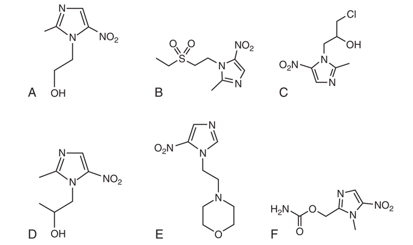

Miscellaneous Agents: Metronidazole and the Urinary Tract Agents
Lecture notes for postgraduate infectious diseases specialists
0.1 Introduction
These notes accompany a ~1.5-hour lecture pairing two “miscellaneous” antibacterial topics: metronidazole and the urinary tract agents (nitrofurantoin, fosfomycin, methenamine). Although the textbook groups them separately, they share a single instructive theme — pharmacology, not spectrum, determines clinical fate. Metronidazole’s near-complete absorption became a liability in luminal gut infection; the urinary agents succeed in cystitis precisely because they concentrate in urine and essentially nowhere else useful.
Part I is condensed from the metronidazole chapter (Nagel & Aronoff, Ch. 27, Mandell, Douglas, and Bennett’s Principles and Practice of Infectious Diseases). Part II is drawn from Horton & Drekonja, “Urinary Tract Agents: Nitrofurantoin, Fosfomycin, and Methenamine” (Ch. 36), supplemented with the cornerstone cystitis guideline (Gupta et al., 2011) and two landmark trials verified against the primary literature — the nitrofurantoin-versus-fosfomycin head-to-head (Huttner et al., 2018) and the ALTAR methenamine non-inferiority trial (Harding et al., 2022).
NoteThe unifying theme
For all four drugs, a pharmacokinetic property — absorption, distribution, or site concentration — decides the clinical outcome more than the in vitro MIC does.
0.2 Learning Objectives
- Explain metronidazole’s prodrug activation and why it is selective for anaerobes — and where that selectivity leaves gaps.
- Recall metronidazole’s pharmacokinetics, signature toxicities, the warfarin interaction, and why it was demoted in C. difficile infection.
- Map the three urinary-tract agents — nitrofurantoin, fosfomycin, methenamine — to their mechanisms, niches, and correct clinical roles.
- Justify why nitrofurantoin and fosfomycin are first-line for cystitis but useless for pyelonephritis, and why methenamine is prophylaxis only.
- Apply the recent trial evidence (Huttner 2018, ALTAR 2022) that has refined how we use these agents.
1 Part I — Metronidazole
1.1 History and Structure
Azomycin (a 2-nitroimidazole) was isolated from a Streptomyces species in 1953; the 5-nitroimidazole derivative metronidazole was synthesized in 1959 and used for trichomoniasis. Its antibacterial potential was discovered serendipitously in 1962, when a patient treated for trichomoniasis had her acute ulcerative gingivitis resolve — the observation that opened the entire anaerobic indication. The class (metronidazole, tinidazole, secnidazole, ornidazole) is defined by an imidazole ring bearing a nitro group at position 5 — the business end of the molecule, since everything about mechanism and resistance turns on what happens to that nitro group.

1.2 Mechanism of Action — An Inert Prodrug
Metronidazole is an inert prodrug whose spectrum is set entirely by a target organism’s ability to activate it (Dingsdag and Hunter, 2018; Edwards, 1993). Four steps follow: (1) entry by passive diffusion; (2) reductive activation, in which an electron is transferred to the nitro group to form a short-lived, cytotoxic nitroso free radical — a step that establishes a concentration gradient driving further uptake; (3) cytotoxicity, as the activated compound damages DNA and produces strand breaks; and (4) release of inactive end-products.

ImportantWhy it is selective for anaerobes
Anaerobes reduce the nitro group using low-redox-potential electron carriers — ferredoxin or flavodoxin, reduced in turn by pyruvate:ferredoxin oxidoreductase (PFOR). Aerobes lack carriers negative enough to activate the drug, and the active form is re-oxidized to prodrug in the presence of oxygen — so activity is confined to anaerobic and microaerophilic niches. Helicobacter pylori uses an oxygen-insensitive nitroreductase (RdxA); Giardia, Entamoeba, and Trichomonas carry bacteria-like nitroreductases.
Figure 3 contrasts the two fates of the drug. In the anaerobe, pyruvate:ferredoxin oxidoreductase (PFOR) reduces ferredoxin/flavodoxin, which donates an electron to the nitro group to form the cytotoxic nitroso radical that damages DNA — and activation itself pulls more drug into the cell. In the aerobe, oxygen re-oxidizes the radical straight back to the inert prodrug (futile cycling), so no cytotoxic species accumulates.
1.3 Spectrum of Activity
Metronidazole is reliable against gram-negative anaerobes (Bacteroides, Fusobacterium, Prevotella, Porphyromonas) and the clostridia. It has a clinically important intrinsic-resistance gap: the non-spore-forming gram-positive anaerobes — Actinomyces, Cutibacterium acnes, Lactobacillus, Bifidobacterium, Propionibacterium (LeCorn et al., 2007; Löfmark et al., 2010). Facultative organisms are not reliably covered.
WarningTwo infections metronidazole cannot treat
Actinomycosis and Cutibacterium acnes infections are not treatable with metronidazole because of intrinsic resistance — a classic trap when “covering anaerobes” empirically.
Its antiprotozoal activity (Trichomonas vaginalis, Giardia, Entamoeba histolytica, Dientamoeba fragilis) follows from the same activation biology. This broad activity perturbs the anaerobic gut microbiome, which is part of the argument for preferring alternatives in some luminal indications.
The spectrum, and its gaps, are summarized in Table 1. The organizing principle is selectivity by activation: organisms that reduce the nitro group in a low-redox environment are killed, while those that lack the low-potential electron carriers (aerobes and facultative organisms in their aerobic state) or that fail to accumulate the active form (the non-spore-forming gram-positive anaerobes) are not.
| Category | Representative organisms | Metronidazole activity |
|---|---|---|
| Gram-negative anaerobes | Bacteroides, Fusobacterium, Prevotella, Porphyromonas | Reliable |
| Gram-positive spore-forming anaerobes | Clostridium spp., Clostridioides difficile | Reliable (but no longer first-line for CDI) |
| Non-spore-forming gram-positive anaerobes | Actinomyces, Cutibacterium acnes, Lactobacillus, Bifidobacterium, Propionibacterium | Intrinsic gap — not covered |
| Microaerophilic / other | Helicobacter pylori (via RdxA) | Active in combination therapy |
| Microaerophilic protozoa | Trichomonas vaginalis, Giardia, Entamoeba histolytica, Dientamoeba fragilis | Reliable |
| Aerobes and facultative organisms | Enterobacterales, streptococci, staphylococci | Not covered |
NoteSelectivity is set by activation, not the ring
Two mechanisms enforce anaerobic selectivity: only anaerobes carry electron carriers (ferredoxin/flavodoxin, fed by PFOR) negative enough to reduce the nitro group, and oxygen actively re-oxidizes the active form back to inert prodrug. This is why the drug is useless against aerobes yet retains activity against microaerophilic protozoa — and why the streptococcal co-pathogens of lung abscess (an aerobic/microaerophilic niche) escape it.
1.4 Pharmacokinetics
Metronidazole has near-ideal pharmacokinetics for an anti-anaerobe: oral bioavailability approaches 100%, protein binding is under 20%, and tissue penetration is excellent — cerebrospinal fluid concentrations approximate serum even with non-inflamed meninges, and penetration into abscesses, bile, and peritoneal and pancreatic tissue is very good (Freeman et al., 1997). The parent half-life is roughly 6–10 hours (mean about 8 hours); hepatic oxidation is the main elimination route, yielding an active hydroxy metabolite that retains 30–65% of the parent’s activity and has a longer half-life (~11–13 hours). Killing is concentration-dependent (like the aminoglycosides and fluoroquinolones), so the pharmacodynamic driver is AUC/MIC, not time above MIC.
TipDose adjustment: hepatic yes, renal (mostly) no
Reduce the dose by 50% in significant hepatic disease. Routine renal adjustment is not required, but patients on intermittent hemodialysis need a supplemental dose after each session. Note the recurring irony: the complete absorption that makes the drug so well distributed is exactly what undermines it in the colonic lumen (see CDI, below).
1.5 Dosing and the Case for Twice-Daily Administration
Metronidazole has traditionally been dosed every 8 hours, but because killing is concentration-dependent the relevant pharmacodynamic index is AUC/MIC, and a fixed total daily dose meets that target largely regardless of how it is divided. Monte Carlo simulation puts the anaerobic target at AUC/MIC ≥ 70; a total of 1000 mg/day achieves greater than 99% target attainment against Bacteroides fragilis at an MIC below 2 mg/L, whether given q8h or q12h (Lewis et al., 2000; Sprandel et al., 2006). The long parent half-life (~8 hours) and the active hydroxy metabolite (~11–13 hours) together sustain exposure across a 12-hour interval: on 500 mg q12h, measured troughs (~6–7 mg/L) sit at or below the CLSI anaerobe breakpoint (≤ 8 mg/L) while peaks reach ~17–24 mg/L (Earl et al., 1989).
The clinical evidence for q12h dosing is accumulating but remains observational. Earl 1989 is the classic pharmacokinetic anchor: 48 surgical patients on 12-hourly metronidazole had IV troughs averaging 6.7 mg/L, above the MIC of most obligate anaerobes (Earl et al., 1989). Soule 2018 (single-centre, n = 200) found no difference in clinical cure between q8h and q12h in anaerobic or mixed infections, though it lacked culture data (Soule et al., 2018). The Shah studies tightened this by restricting to culture-proven disease — obligate-anaerobe bacteraemia (2021, n = 85; no difference in mortality, length of stay, or escalation) and then Bacteroides bloodstream infection specifically (2024, n = 242; clinical failure 15% vs 18% and 30-day mortality 15% vs 17%, no significant difference) (Shah et al., 2024, 2021). No randomized trial exists, and the data do not extend to CDI, CNS infection, or amebiasis, where luminal or sustained high exposure matters. Where they apply, the practical advantages of twice-daily dosing are real: fewer doses, less nursing and pharmacy time, better adherence, and lower cumulative-dose neurotoxicity risk.
1.6 Dosing by Indication
Typical regimens are summarized in Table 2. Note the recurring 500 mg unit, the shift toward q12h dosing for many indications, and the requirement to follow amebic disease with a luminal agent. Halve all of these in significant hepatic disease.
| Indication | Typical regimen |
|---|---|
| Serious anaerobic infection | 500 mg IV/PO q8–12h |
| Bacterial vaginosis | 500 mg PO bid × 7 d (or vaginal gel) |
| Trichomoniasis | 500 mg PO bid × 7 d |
| Giardiasis | 250 mg PO tid × 5–7 d |
| Amebic colitis / liver abscess | 500–750 mg PO tid × 7–10 d + luminal agent |
| H. pylori (as part of quadruple therapy) | 500 mg PO bid–tid |
1.7 Adverse Effects
Most adverse effects are mild, dose-dependent, and reversible — nausea, a metallic taste, and GI upset. Prolonged therapy (beyond about four weeks) is associated with reversible central nervous system toxicity (encephalopathy, ataxia, dysarthria, seizures) and peripheral neuropathy (Kuriyama et al., 2011). Metronidazole should be avoided in the first trimester of pregnancy, though large studies have not demonstrated a clear malformation signal with later exposure (Diav-Citrin et al., 2001).
1.8 Drug Interactions
WarningWarfarin is the dangerous one
Metronidazole inhibits the metabolism of S-warfarin, producing a marked rise in INR; a pre-emptive warfarin dose reduction of roughly 20–30% with close monitoring is prudent (Holt et al., 2010). It also raises busulfan, lithium, phenytoin, and calcineurin-inhibitor levels.
The disulfiram-like reaction with alcohol is widely taught but rests on contested evidence — one controlled study found none (Visapää et al., 2002). Advising abstinence remains reasonable, but the certainty is weaker than the teaching implies; tinidazole and secnidazole are not CYP2E1 substrates and are unlikely to cause it.
1.9 Resistance Mechanisms
All proposed mechanisms follow from the activation pathway: reduced uptake, efflux, reduced activation, drug inactivation, and enhanced DNA repair (Dingsdag and Hunter, 2018). In anaerobes, the best-characterized mechanism is the nim genes (nimA–nimH), encoding a reductase that converts the nitro group to an inert amino derivative — though carriage of a nim gene does not reliably predict phenotypic resistance (Alauzet et al., 2017). In H. pylori, resistance arises from loss of activation via rdxA/frxA mutations (global prevalence now 40–90%). In Trichomonas, clinical failure is usually “aerobic resistance,” in which raised intracellular oxygen reoxidizes the active radical. Refractory giardiasis is increasing.
1.10 Clinical Uses
Trichomoniasis is the indication metronidazole still fully owns — the nitroimidazoles are the only FDA-approved class, a 7-day regimen is now preferred over single-dose in women, and partners are treated (Workowski et al., 2021). Giardiasis first-line has shifted to tinidazole or nitazoxanide, with metronidazole as an alternative. Amebiasis (invasive colitis, liver abscess) is treated with a tissue amebicide followed by a luminal agent such as paromomycin. Anaerobic infections — intra-abdominal, CNS (brain abscess, where CSF penetration is a genuine advantage), gynecologic, oral/dental — are core indications, as is bacterial vaginosis (oral or vaginal, comparable to clindamycin). Metronidazole remains a component of H. pylori quadruple therapy, working even when the isolate tests resistant in vitro (Shih et al., 2022).
ImportantThe lung abscess exception
Metronidazole monotherapy fails in anaerobic lung abscess — a comparative trial against clindamycin was stopped early (Perlino, 1981). The reason is spectrum, not penetration: it misses the co-infecting aerobic and microaerophilic streptococci. Adding a β-lactam corrects this.
1.10.1 The CDI demotion
Metronidazole was once first-line for Clostridioides difficile infection; it no longer is. A meta-analysis found vancomycin superior in severe disease, a large cohort found lower mortality with vancomycin in severe CDI, and a Cochrane review concluded vancomycin or fidaxomicin is superior to metronidazole (Li et al., 2015; Nelson et al., 2017). Current IDSA/SHEA guidance recommends fidaxomicin or vancomycin, not oral metronidazole, as first-line (Johnson et al., 2021).
TipWhy metronidazole failed in CDI
Two pharmacologic reasons. It is almost completely absorbed in the upper gut, so colonic luminal concentrations are low and variable — and stool concentrations fall as diarrhea resolves, exactly when drug is still needed. And metronidazole resistance in C. difficile is emerging. Vancomycin and fidaxomicin, being non-absorbed, deliver reliably high luminal concentrations.
1.11 Other and Topical Uses
Beyond the core anaerobic and antiprotozoal indications, metronidazole has a tail of niche uses: inflammatory bowel disease (best evidence in perianal Crohn disease and pouchitis), topical dermatologic formulations for rosacea and acne, and historical high-dose use as a radiosensitizer. These are worth recognizing but are not why one reaches for the drug.
1.12 Other Nitroimidazoles
Tinidazole, secnidazole, and ornidazole share metronidazole’s mechanism, spectrum, and toxicity; their distinguishing feature is a longer half-life permitting once-daily or single-dose regimens for amebiasis, giardiasis, trichomoniasis, and bacterial vaginosis, often with better tolerability (Lamp et al., 1999). Metronidazole, however, remains the drug of choice for life-threatening anaerobic infection, where efficacy and safety data for the others are limited.
2 Part II — Urinary Tract Agents
2.1 Defining the Target
Nitrofurantoin and fosfomycin are first-line for acute uncomplicated cystitis — bladder-confined infection in a non-pregnant woman with a normal tract — chosen for their pharmacology, efficacy, safety, and low collateral damage (Gupta et al., 2011). Both reach useful concentrations essentially only in urine, which is a feature for cystitis and a hard limit for tissue infection. Complicated UTI and pyelonephritis require agents with parenchymal and serum levels; the urinary agents fail there. Methenamine is not truly an antibiotic until the bladder converts it, and is used for prophylaxis only. Asymptomatic bacteriuria is generally not treated, the exceptions being pregnancy and pre-urologic-instrumentation.
The efficacy of the common cystitis agents is summarized in Table 3.
| Agent | Dose | Clinical efficacy | Notes |
|---|---|---|---|
| Nitrofurantoin | 100 mg bid × 5 d | ~88–93% | first-line; not for pyelonephritis |
| TMP-SMX | 160/800 mg bid × 3 d | ~93% | rising resistance limits empiric use |
| Fosfomycin | 3 g single dose | ~91% clinical (~80% microbiologic) | convenient; slightly less effective |
| Fluoroquinolone | varies × 3 d | ~90% | reserve — collateral damage |
| β-lactam | varies × 3–5 d | ~89% | generally less effective |
2.2 Nitrofurantoin
Nitrofurantoin is a synthetic nitrofuran (a weak acid) reduced by bacterial nitroreductases to reactive intermediates that damage ribosomes, DNA, and the Krebs cycle. Because it acts at multiple sites, resistance is uncommon even after 70 years of use. It is active against more than 90% of uropathogenic E. coli, S. saprophyticus, and enterococci (including many vancomycin-resistant strains), but Proteus and Pseudomonas are intrinsically resistant and Klebsiella, Enterobacter, and Serratia are unreliable (Gupta et al., 2011).
2.2.1 Formulations and pharmacology
The microcrystalline form (Furadantin) is absorbed rapidly and more completely (43%) but causes more GI upset; the macrocrystalline form (Macrodantin) is absorbed more slowly (36%) and is better tolerated; the monohydrate/macrocrystal mixture (Macrobid) is dosed 100 mg twice daily. Serum concentrations are negligible, while urinary concentrations (50–250 µg/mL) far exceed the MIC — the drug is a pure bladder agent, with prostatic and tissue levels too low for tissue infection. It is renally cleared; the package insert advises against use below a creatinine clearance of 60 mL/min, whereas the American Geriatrics Society is more permissive, advising avoidance below 30 mL/min or for long-term suppression (American Geriatrics Society Beers Criteria Update Expert Panel, 2019).
2.2.2 Clinical use
Nitrofurantoin is first-line for acute uncomplicated cystitis as a 5-day course, and effective for prophylaxis of recurrent UTI (100 mg daily, or a post-coital single dose) (Muller et al., 2017). It must not be used for pyelonephritis or complicated UTI — breakthrough bacteremia has occurred during therapy. The most rigorous head-to-head trial found 5-day nitrofurantoin superior to single-dose fosfomycin (clinical resolution 70% vs 58% at 28 days) (Huttner et al., 2018), which has nudged many clinicians toward nitrofurantoin as the preferred first-line where renal function allows.
WarningToxicities to know
The signature serious reaction is pulmonary hypersensitivity — an acute form (hours to weeks: fever, cough, dyspnea, eosinophilia, infiltrates, reversible) and a chronic form (months: insidious interstitial fibrosis, potentially irreversible) (Santos et al., 2016). Hepatotoxicity (acute reversible; chronic active hepatitis with prolonged use), hemolytic anemia in G6PD deficiency, and peripheral neuropathy (especially in renal failure) also occur.
2.2.3 Pregnancy and interactions
Nitrofurantoin is preferred for cystitis in the second and third trimesters (category B) but should be avoided at term, with imminent delivery, or in neonates because of the risk of hemolytic anemia in mother and baby; ACOG advises first-trimester use only when alternatives are contraindicated. Avoid co-administration with other methemoglobinemia-inducers; there is a hyperkalemia signal (caution with spironolactone/triamterene), and antacids reduce absorption.
2.3 Fosfomycin
Discovered in 1969, fosfomycin is a small (138 Da), water-soluble phosphonic-acid antibiotic that blocks the first committed step of peptidoglycan synthesis (inhibiting MurA/enolpyruvyl transferase) after entering the cell through glycerophosphate and hexose-phosphate transporters — a route whose loss confers resistance (Falagas et al., 2016). It has broad gram-negative activity including more than 95% of ESBL E. coli, and E. faecalis/E. faecium are susceptible; Pseudomonas is variable and Acinetobacter usually resistant. Resistance arises from transport loss or Fos enzymes that break the oxirane ring. In the US only the oral tromethamine salt is available (for cystitis); parenteral fosfomycin is a European systemic option.
2.3.1 Pharmacology and dosing
Fosfomycin is best absorbed before food (~40% absorbed) and is not metabolized; its long half-life sustains urinary concentrations near 2000 µg/mL for more than 24 hours from a single dose. The dose for uncomplicated cystitis is 3 g of oral powder dissolved in at least half a cup of water — never taken dry — as a single dose; for complicated UTI, 3 g every 48–72 hours has been used.
2.3.2 Role and evidence
IDSA lists fosfomycin as first-line for cystitis for its ease of administration and preserved activity against uropathogenic E. coli, while cautioning that it may be slightly less effective (Gupta et al., 2011); its microbiologic cure (~80%) trails comparators, and the Huttner trial found the single dose inferior to 5-day nitrofurantoin (Huttner et al., 2018). Its real value is as an oral option for MDR uropathogens — ESBL- and some KPC-producing Enterobacterales — where alternatives are IV, and it has off-label roles in prostatitis and pre-prostate-biopsy prophylaxis owing to prostatic penetration. It is well tolerated (diarrhea, nausea, headache; rare optic neuritis and anaphylaxis), but rising community use has been paralleled by increasing fosfomycin resistance in ESBL E. coli. It is not indicated for pyelonephritis.
2.3.3 Intravenous fosfomycin — a European systemic agent
The Mandell chapter, written from a US perspective, treats fosfomycin almost entirely as the oral cystitis drug. In Italy and much of Europe, however, intravenous fosfomycin (the disodium salt) is an established systemic antibiotic — a distinct clinical entity from the 3 g oral tromethamine sachet, even though it is the same molecule.
Its principal role is as a combination partner for serious multidrug-resistant gram-negative infection — carbapenem-resistant Enterobacterales (including KPC producers), MDR Pseudomonas aeruginosa, and Acinetobacter baumannii. The rationale is pharmacological: fosfomycin’s unique early cell-wall target (MurA) confers no cross-resistance with other classes and produces documented in vitro and in vivo synergy with β-lactams, polymyxins, and aminoglycosides (Grabein et al., 2017; Zayyad et al., 2017). Because resistant subpopulations emerge rapidly on treatment — especially in Pseudomonas — it should never be used as monotherapy for serious infection.
Typical European dosing is high and divided — 4 g every 6 hours or 6–8 g every 8 hours (12–24 g/day), frequently in combination, with renal dose adjustment. Unlike the oral urinary niche, IV fosfomycin distributes usefully to CSF, bone, and soft tissue.
2.3.3.1 Salt and water overload — the dominant practical liability
Intravenous fosfomycin is given as the disodium salt, and its sodium content is clinically significant: roughly 11–14 mmol of sodium per gram of drug (preparation-dependent). A full treatment regimen of 16 g/day therefore delivers on the order of 175–220 mmol of sodium per day — more than the sodium in a litre of 0.9% saline — before maintenance fluids, line flushes, and other sodium-containing drugs are counted. In patients with decompensated heart failure, cirrhosis with ascites, severe hypertension, or oliguric renal failure this can precipitate frank volume overload and pulmonary oedema. The large distal-nephron sodium delivery also drives renal potassium wasting, producing the hypokalaemia (and occasionally metabolic alkalosis) prominent in trials such as ZEUS, alongside transient transaminase elevations.
WarningManaging the sodium/fluid burden
Screen for high-risk patients (heart failure, ascites, severe hypertension, poor renal function) before starting. Monitor daily weight, fluid balance, and blood pressure, and check serum potassium and magnesium with proactive replacement. Count the fosfomycin sodium in the patient’s total daily sodium budget, minimise sodium in co-administered fluids, and use diuretics where appropriate. This burden is a genuine reason IV fosfomycin remains a combination/second-line agent rather than a workhorse.
2.3.3.2 Does the clinical evidence support IV fosfomycin?
The evidence base is uneven, and it is worth summarizing honestly.
Supporting. The pivotal registration trial, ZEUS, found intravenous fosfomycin (ZTI-01, 6 g every 8 hours) non-inferior to piperacillin-tazobactam for complicated UTI and acute pyelonephritis (Kaye et al., 2019). Beyond UTI, the case rests on in vitro synergy and observational cohorts in carbapenem-resistant Enterobacterales and MDR Pseudomonas aeruginosa, and on expert guidance: the 2024 SIMIT/SPILF (Italian–French) practical recommendations endorse specific fosfomycin combinations — for example cefiderocol plus fosfomycin for resistant P. aeruginosa pneumonia, and ceftazidime-avibactam plus fosfomycin for carbapenem-resistant P. aeruginosa neurological infection (Meschiari et al., 2024).
Not, or only weakly, supporting. The FOREST randomized trial is the cautionary counterpoint: as targeted therapy for multidrug-resistant E. coli bacteraemic UTI, intravenous fosfomycin (4 g every 6 hours) did not meet non-inferiority against ceftriaxone or meropenem (clinical-microbiological cure 68.6% vs 78.1%), and the shortfall was driven by adverse-event–related discontinuations (8.5% vs 0%) rather than microbiological failure — the salt/water and electrolyte toxicities in practice (Sojo-Dorado et al., 2022). Notably, the fosfomycin arm acquired fewer new ceftriaxone- or meropenem-resistant gram-negatives, an ecological point in its favour. More broadly, most non-UTI evidence is observational and low-quality, and randomized trials in severe MDR infection are lacking (Grabein et al., 2017; Zayyad et al., 2017). The net position: reasonable as part of combination therapy, or when better-tolerated options are exhausted, but not established as first-line monotherapy and not proven for serious bacteraemia.
NoteThe gram-positive angle — occasionally MRSA
Intravenous fosfomycin retains activity against many gram-positives, including MRSA and some VRE, and is used as a combination partner rather than alone. In a Spanish randomized trial, daptomycin plus fosfomycin versus daptomycin alone for MRSA bacteraemia and endocarditis produced a 12% higher rate of treatment success (not statistically significant) but significantly fewer microbiologic failures and less complicated bacteraemia, at the cost of more adverse events (Pujol et al., 2021). It is therefore a reasonable adjunct in persistent or complicated MRSA bacteraemia when potentiation of daptomycin is desired — a salvage-oriented, not routine, choice. Fosfomycin’s cell-wall action synergizes with daptomycin’s membrane effect.
2.4 Methenamine
Methenamine (hexamethylenetetramine) itself has little antibacterial activity; in acidic urine (pH <6) each molecule hydrolyzes to formaldehyde (plus ammonia), a nonspecific denaturant of proteins and nucleic acids with broad activity and no described microbial resistance (Gleckman et al., 1979; Musher and Griffith, 1974). It is available as hippurate (Hiprex) or mandelate salts — the acid component aids urinary acidification — or without an acid. It is rapidly absorbed, ~95% renally excreted, with a short serum half-life (3–4 hours) (Klinge et al., 1982). Urease-producing organisms such as Proteus alkalinize the urine and block conversion.
ImportantWhy methenamine is prophylaxis only
Formaldehyde generation takes hours (about 2 hours at pH 5.6, 6 hours at pH 6.5), so it requires urinary dwell time. It is therefore ineffective with indwelling catheters or urostomies (urine is flushed too quickly) and for pyelonephritis or any upper-tract infection (no ureteral activity). Dosing is methenamine hippurate 1 g orally twice daily for prevention.
2.4.1 Safety and the ALTAR trial
Side effects are usually mild (nausea, rash); high doses can cause GI upset and hemorrhagic cystitis from bladder formaldehyde. It should be avoided in hepatic failure (ammonia generation) and may precipitate urate crystals and sulfonamides. The pragmatic ALTAR trial (BMJ 2022) found methenamine hippurate non-inferior to daily antibiotic prophylaxis for recurrent UTI in women, with less antibiotic-resistance selection (Harding et al., 2022), repositioning it as a credible antibiotic-sparing preventive — upgrading the older, smaller crossover evidence (Cronberg et al., 1987).
2.5 Putting the Urinary Agents Together
| Nitrofurantoin | Fosfomycin | Methenamine | |
|---|---|---|---|
| Role | Cystitis treatment | Cystitis treatment | Prophylaxis only |
| Mechanism | Multi-target (nitroreduction) | MurA / cell wall | → formaldehyde (acid urine) |
| Pyelonephritis | No | No | No |
| Key limitation | Renal function; lung/liver toxicity | Slightly lower efficacy; Fos resistance | Needs acid urine and dwell time |
| Resistance | Rare | Transport / Fos enzymes | None described |
A practical dosing reference is given in Table 5. Two absolute rules travel with it: nitrofurantoin and fosfomycin treat cystitis but never pyelonephritis, and methenamine is prophylaxis only.
| Agent | Regimen (uncomplicated cystitis / prophylaxis) |
|---|---|
| Nitrofurantoin (Macrobid) | 100 mg PO bid × 5 d; prophylaxis 50–100 mg daily |
| Fosfomycin | 3 g single oral dose (before food); complicated: 3 g q48–72h |
| Methenamine hippurate | 1 g PO bid — prevention only; needs acidic urine |
Their coverage of common uropathogens differs in instructive ways, summarized in Table 6. Nitrofurantoin and fosfomycin have defined bacterial spectra with characteristic gaps, whereas methenamine’s activity is a chemical rather than a microbiological property — formaldehyde is a nonspecific denaturant active against essentially all uropathogens, provided the urine is acidic and the organism does not raise urinary pH.
| Uropathogen | Nitrofurantoin | Fosfomycin | Methenamine |
|---|---|---|---|
| E. coli (incl. ESBL) | Reliable (>90%) | Reliable (>95% ESBL) | Active† |
| S. saprophyticus | Reliable | Reliable | Active† |
| Enterococci (incl. many VRE) | Reliable | Reliable (E. faecalis/E. faecium) | Active† |
| Klebsiella / Enterobacter / Serratia | Unreliable | Variable–generally active | Active† |
| Proteus spp. | Intrinsically resistant | Variable | Ineffective (urease → alkaline urine)‡ |
| Pseudomonas aeruginosa | Intrinsically resistant | Variable | Limited |
| Acinetobacter | Intrinsically resistant | Usually resistant | Limited |
†Methenamine’s formaldehyde is a nonspecific denaturant with broad activity and no described resistance, but it acts only in acidic urine (pH <6) and requires bladder dwell time — so it is a prophylactic, not a treatment, agent. ‡Urease-producing organisms such as Proteus alkalinize the urine and block formaldehyde generation (Falagas et al., 2016; Gupta et al., 2011; Musher and Griffith, 1974).
The stewardship rationale unifies them: guidelines favour nitrofurantoin, fosfomycin, and TMP-SMX over fluoroquinolones for uncomplicated cystitis because of less collateral damage to the microbiome and resistome, and methenamine extends the antibiotic-sparing idea to prevention. Their shared limit is that none reaches tissue or serum levels — anything beyond the bladder requires escalation.
2.6 Key Takeaways
Across all four agents, pharmacology rather than spectrum decides the outcome. Metronidazole is a prodrug, anaerobe-selective, with superb penetration; halve its dose in hepatic disease and supplement after dialysis; remember its intrinsic gaps (Actinomyces, C. acnes), its failure in lung abscess, its demotion in CDI, and the warfarin interaction. Nitrofurantoin and fosfomycin are first-line for cystitis, concentrate only in urine, and must never be used for pyelonephritis; the best trial evidence favours 5-day nitrofurantoin over single-dose fosfomycin. Methenamine generates formaldehyde in situ, provokes no resistance, and is prophylaxis only, now validated by ALTAR. Stewardship favours all of these agents over fluoroquinolones for uncomplicated cystitis.
References
Alauzet C, Berger S, Jean-Pierre H, et al. nimH, a novel nitroimidazole resistance gene contributing to metronidazole resistance in Bacteroides fragilis. Journal of Antimicrobial Chemotherapy 2017;72:2673–5. https://doi.org/10.1093/jac/dkx160.
American Geriatrics Society Beers Criteria Update Expert Panel. American Geriatrics Society 2019 updated AGS Beers Criteria for potentially inappropriate medication use in older adults. Journal of the American Geriatrics Society 2019;67:674–94. https://doi.org/10.1111/jgs.15767.
Cronberg S, Welin C-O, Henriksson L, et al. Prevention of recurrent acute cystitis by methenamine hippurate: Double blind controlled crossover long term study. British Medical Journal (Clinical Research Ed) 1987;294:1507–8. https://doi.org/10.1136/bmj.294.6586.1507.
Diav-Citrin O, Shechtman S, Gotteiner T, Arnon J, Ornoy A. Pregnancy outcome after gestational exposure to metronidazole: A prospective, controlled cohort study. Teratology 2001;63:186–92. https://doi.org/10.1002/tera.1033.
Dingsdag SA, Hunter N. Metronidazole: An update on metabolism, structure-cytotoxicity and resistance mechanisms. Journal of Antimicrobial Chemotherapy 2018;73:265–79. https://doi.org/10.1093/jac/dkx351.
Earl P, Sisson PR, Ingham HR. Twelve-hourly dosage schedule for oral and intravenous metronidazole. Journal of Antimicrobial Chemotherapy 1989;23:619–21. https://doi.org/10.1093/jac/23.4.619.
Edwards DI. Nitroimidazole drugs—action and resistance mechanisms. I. Mechanisms of action. Journal of Antimicrobial Chemotherapy 1993;31:9–20. https://doi.org/10.1093/jac/31.1.9.
Falagas ME, Vouloumanou EK, Samonis G, Vardakas KZ. Fosfomycin. Clinical Microbiology Reviews 2016;29:321–47. https://doi.org/10.1128/CMR.00068-15.
Freeman CD, Klutman NE, Lamp KC. Metronidazole: A therapeutic review and update. Drugs 1997;54:679–708. https://doi.org/10.2165/00003495-199754050-00003.
Gleckman R, Alvarez S, Joubert DW, et al. Drug therapy reviews: Methenamine mandelate and methenamine hippurate. American Journal of Hospital Pharmacy 1979;36:1509–12.
Grabein B, Graninger W, Rodríguez Baño J, Dinh A, Liesenfeld DB. Intravenous fosfomycin—back to the future. Systematic review and meta-analysis of the clinical literature. Clinical Microbiology and Infection 2017;23:363–72. https://doi.org/10.1016/j.cmi.2016.12.005.
Gupta K, Hooton TM, Naber KG, Wullt B, Colgan R, Nicolle LE, et al. International clinical practice guidelines for the treatment of acute uncomplicated cystitis and pyelonephritis in women: A 2010 update by the Infectious Diseases Society of America and the European Society for Microbiology and Infectious Diseases. Clinical Infectious Diseases 2011;52:e103–20. https://doi.org/10.1093/cid/ciq257.
Harding C, Chadwick T, Homer T, Lecouturier J, Mossop H, Pickard R, et al. Alternative to prophylactic antibiotics for the treatment of recurrent urinary tract infections in women: Multicentre, open label, randomised, non-inferiority trial (ALTAR). BMJ 2022;376:e068229. https://doi.org/10.1136/bmj-2021-068229.
Holt RK, Anderson EA, Cantrell MA, Shaw RF, Egge JA. Preemptive dose reduction of warfarin in patients initiating metronidazole. Drug Metabolism and Drug Interactions 2010;25:35–9. https://doi.org/10.1515/dmdi.2010.005.
Huttner A, Kowalczyk A, Turjeman A, Babich T, Brossier C, Harbarth S, et al. Effect of 5-day nitrofurantoin vs single-dose fosfomycin on clinical resolution of uncomplicated lower urinary tract infection in women: A randomized clinical trial. JAMA 2018;319:1781–9. https://doi.org/10.1001/jama.2018.3627.
Johnson S, Lavergne V, Skinner AM, et al. Clinical practice guideline by IDSA and SHEA: 2021 focused update guidelines on management of Clostridioides difficile infection in adults. Clinical Infectious Diseases 2021;73:e1029–44. https://doi.org/10.1093/cid/ciab549.
Kaye KS, Rice LB, Dane AL, Stus V, Sagan O, Fedosiuk E, et al. Fosfomycin for injection (ZTI-01) versus piperacillin-tazobactam for the treatment of complicated urinary tract infection including acute pyelonephritis: ZEUS, a phase 2/3 randomized trial. Clinical Infectious Diseases 2019;69:2045–56. https://doi.org/10.1093/cid/ciz181.
Klinge E, Männistö P, Mäntylä R, et al. Pharmacokinetics of methenamine in healthy volunteers. Journal of Antimicrobial Chemotherapy 1982;9:209–16. https://doi.org/10.1093/jac/9.3.209.
Kuriyama A, Jackson JL, Doi A, Kamiya T. Metronidazole-induced central nervous system toxicity: A systematic review. Clinical Neuropharmacology 2011;34:241–7. https://doi.org/10.1097/WNF.0b013e3182334b35.
Lamp KC, Freeman CD, Klutman NE, Lacy MK. Pharmacokinetics and pharmacodynamics of the nitroimidazole antimicrobials. Clinical Pharmacokinetics 1999;36:353–73. https://doi.org/10.2165/00003088-199936050-00004.
LeCorn DW, Vertucci FJ, Rojas MF, Progulske-Fox A, Belanger M. In vitro activity of amoxicillin, clindamycin, doxycycline, metronidazole, and moxifloxacin against oral Actinomyces. Journal of Endodontics 2007;33:557–60. https://doi.org/10.1016/j.joen.2007.02.002.
Lewis RE, Klepser ME, Ernst EJ, Snabes MA, Jones RN. Comparison of oral immediate-release (IR) and extended-release (ER) metronidazole bactericidal activity against bacteroides spp. Using an in vitro model of infection. Diagnostic Microbiology and Infectious Disease 2000;37:51–5. https://doi.org/10.1016/s0732-8893(00)00120-6.
Li R, Lu L, Lin Y, Wang M, Liu X. Efficacy and safety of metronidazole monotherapy versus vancomycin monotherapy or combination therapy in patients with Clostridium difficile infection: A systematic review and meta-analysis. PLoS ONE 2015;10:e0137252. https://doi.org/10.1371/journal.pone.0137252.
Löfmark S, Edlund C, Nord CE. Metronidazole is still the drug of choice for treatment of anaerobic infections. Clinical Infectious Diseases 2010;50:S16–23. https://doi.org/10.1086/647939.
Meschiari M, Asquier-Khati A, Tiseo G, Luque-Paz D, Murri R, Falcone M, et al. Treatment of infections caused by multidrug-resistant gram-negative bacilli: A practical approach by the Italian (SIMIT) and French (SPILF) societies of infectious diseases. International Journal of Antimicrobial Agents 2024;64:107186. https://doi.org/10.1016/j.ijantimicag.2024.107186.
Muller AE, Verhaegh EM, Harbarth S, Mouton JW, Huttner A. Nitrofurantoin’s efficacy and safety as prophylaxis for urinary tract infections: A systematic review of the literature and meta-analysis of controlled trials. Clinical Microbiology and Infection 2017;23:355–62. https://doi.org/10.1016/j.cmi.2016.08.003.
Musher DM, Griffith DP. Generation of formaldehyde from methenamine: Effect of pH and concentration, and antibacterial effect. Antimicrobial Agents and Chemotherapy 1974;6:708–11. https://doi.org/10.1128/AAC.6.6.708.
Nelson RL, Suda KJ, Evans CT. Antibiotic treatment for Clostridium difficile-associated diarrhoea in adults. Cochrane Database of Systematic Reviews 2017;3:CD004610. https://doi.org/10.1002/14651858.CD004610.pub5.
Perlino CA. Metronidazole vs clindamycin treatment of anaerobic pulmonary infection: Failure of metronidazole therapy. Archives of Internal Medicine 1981;141:1424–7. https://doi.org/10.1001/archinte.1981.00340120032008.
Pujol M, Miró J-M, Shaw E, Aguado J-M, San-Juan R, Puig-Asensio M, et al. Daptomycin plus fosfomycin versus daptomycin alone for methicillin-resistant Staphylococcus aureus bacteremia and endocarditis: A randomized clinical trial. Clinical Infectious Diseases 2021;72:1517–25. https://doi.org/10.1093/cid/ciaa1081.
Santos JM, Batech M, Pelter MA, Deamer RL. Evaluation of the risk of nitrofurantoin lung injury and its efficacy in diminished kidney function in older adults in a large integrated healthcare system: A matched cohort study. Journal of the American Geriatrics Society 2016;64:798–805. https://doi.org/10.1111/jgs.14060.
Shah S, Adams K, Merwede J, McManus D, Topal JE. Three is a crowd: Clinical outcomes of a twice daily versus a thrice daily metronidazole dosing strategy from a multicenter study. Anaerobe 2021;71:102378. https://doi.org/10.1016/j.anaerobe.2021.102378.
Shah S, Fisher E, Anderson DJ, et al. Clinical outcomes of a twice-daily metronidazole dosing strategy for Bacteroides spp. Bloodstream infections. International Journal of Antimicrobial Agents 2024;64:107301. https://doi.org/10.1016/j.ijantimicag.2024.107301.
Shih C-A, Shie C-B, Hsu P-I. Update on the first-line treatment of Helicobacter pylori infection in areas with high and low clarithromycin resistances. Therapeutic Advances in Gastroenterology 2022;15:17562848221138168. https://doi.org/10.1177/17562848221138168.
Sojo-Dorado J, López-Hernández I, Rosso-Fernandez C, Palacios-Baena ZR, Pascual Á, Rodríguez-Baño J, et al. Effectiveness of fosfomycin for the treatment of multidrug-resistant Escherichia coli bacteremic urinary tract infections: A randomized clinical trial (FOREST). JAMA Network Open 2022;5:e2137277. https://doi.org/10.1001/jamanetworkopen.2021.37277.
Soule AF, Green SB, Blanchette LM. Clinical efficacy of 12-h metronidazole dosing regimens in patients with anaerobic or mixed anaerobic infections. Therapeutic Advances in Infectious Disease 2018;5:57–62. https://doi.org/10.1177/2049936118766462.
Sprandel KA, Drusano GL, Hecht DW, Rotschafer JC, Danziger LH, Rodvold KA. Population pharmacokinetic modeling and monte carlo simulation of varying doses of intravenous metronidazole. Diagnostic Microbiology and Infectious Disease 2006;55:303–9. https://doi.org/10.1016/j.diagmicrobio.2006.06.013.
Visapää J-P, Tillonen JS, Kaihovaara PS, Salaspuro MP. Lack of disulfiram-like reaction with metronidazole and ethanol. Annals of Pharmacotherapy 2002;36:971–4. https://doi.org/10.1345/aph.1A066.
Workowski KA, Bachmann LH, Chan PA, et al. Sexually transmitted infections treatment guidelines, 2021. MMWR Recommendations and Reports 2021;70:1–187. https://doi.org/10.15585/mmwr.rr7004a1.
Zayyad H, Eliakim-Raz N, Leibovici L, Paul M. Revival of old antibiotics: Needs, the state of evidence and expectations. International Journal of Antimicrobial Agents 2017;49:536–41. https://doi.org/10.1016/j.ijantimicag.2016.11.021.